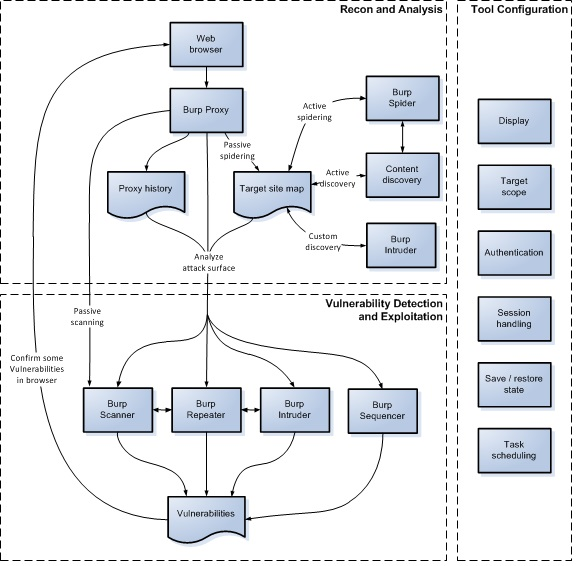

ペネトレーションテストでのBurp Suiteの使用方法
このセクションでは、Web アプリケーションのテストワークフローにおけるBurp Suiteの使い方の基本を説明します。Burpのインストールと起動、プロジェクトの開始、表示設定については、Burp Suite入門のヘルプを参照してください。
初めてBurp Suiteをご利用になる場合は、以下のビデオを見て、ユーザインタフェースに慣れることを推奨します。
YouTubeで"Burp Suite Essentials"の残りのプレイリストをチェックできます。
ビデオチュートリアル
Burp Suite EssentialsプレイリストペネトレーションテストにBurpを使用するには、次のいずれかを実行します:
- 追加の設定が不要な、Burpの内蔵ブラウザを使用する。"Proxy" > "インターセプト"タブに移動し、"ブラウザを開く"をクリックします。新しいブラウザセッションが開き、すべてのトラフィックが自動的にBurpを経由するようプロキシされます。BurpのCA証明書をインストールしなくても、これを使ってHTTPSでテストもできます。
- お好みの外部のブラウザを使用する。さまざまな理由でBurpの内蔵ブラウザを使用したくない場合があります。この場合追加の手順が必要で、Burpと共に動作するようブラウザを設定し、使用するブラウザにBurpのCA証明書をインストールする必要があります。
Burpを実行し、内蔵ブラウザか設定した独自の外部ブラウザを開いたら、"Proxy" > "インターセプト"タブに移動し、インターセプトがオンになっているか確認します (ボタンに"Interceptオフ"と表示されている場合は、クリックしてステータスを切り替えます)。次に、ブラウザに移動して、任意のURLにアクセスします。
ブラウザによって行われた各HTTPリクエストは、"インターセプト"タブに表示されます。それぞれのメッセージを確認し、必要なら編集もできます。編集が完了したら、"転送"ボタンをクリックして、宛先Webサーバにリクエストを送信します。インターセプトされたメッセージが保留されている場合、ブラウザが読み込みを完了させるためには、すべてのメッセージを転送する必要があります。
インターセプトの必要に応じて"インターセプト有効/無効"ボタンを変更してください。詳細は、Burp Proxy入門を参照してください。
Burpを実行している状態でアプリケーションをブラウズすると、"Proxy" > "HTTP履歴"タブには、インターセプト機能がオフになっている場合でも、すべてのリクエストとレスポンスが保持されます。このタブから、生成された一連のリクエストを確認できます。
メッセージエディタパネルでテーブル内のアイテムを選択して、完全なリクエストとレスポンスを表示します。
メッセージインスペクタを使用すると、メッセージで見つかった潜在的に興味深いアイテムを分析するのに役立つさまざまな機能にすばやくアクセスできます。たとえば、エンコードされたアイテムをインスペクタでドリルダウンすると、適切なデコード手順のシーケンスが適用されるため、より人間が読める形式で値を調べられます。
Burp Repeaterなどの編集可能なメッセージの場合、インスペクタでこのデコードされた値の編集もできます。関連するエンコーディングは、入力した値に対して自動的に再適用されます。
ブラウズをしていると、Burpはデフォルトで対象アプリケーションのサイトマップも作成します。これは、"Target" > "サイトマップ"タブで確認できます。
このサイトマップには、あなたがブラウザでアクセスしたすべてのURLと、Burpがレスポンスから推測したコンテンツ(例えば、HTMLレスポンスから解析したリンクなど)が含まれます。既にアクセスしたアイテムは黒で、その他のアイテムは灰色で表示されます。ツリーを展開し、個々のアイテムを選択すると、完全なリクエストとレスポンスが(存在していれば)表示されます。
詳細は、Targetツールの使い方を参照してください。ライブスキャンタスクを適切に設定すると、ブラウズ時にサイトマップに追加するコンテンツを制御できます。
Burp Suiteは補助ツールとして設計されており、ユーザが実行しようとする操作を制御できます。Burpのペネトレーションテストワークフローの中核は、特定のタスクを実行するために各ツール間でHTTPリクエストを転送する機能です。
"Proxy" > "インターセプト"タブや"HTTP履歴"、"サイトマップ"タブなど、HTTPメッセージが表示されるどこからでも、メッセージを転送できます。１つまたは複数のメッセージを選択し、コンテキストメニューから他のツールに転送ができます。
特定のタスクに使用するBurpツールは次の通りです:
- Scanner - 自動でウェブサイトをスキャンし、コンテンツと脆弱性を探し出します。
- Intruder - カスタマイズされた自動攻撃をし、さまざまな種類のテストタスクを実行します。
- Repeater - HTTPリクエストを手動で変更し再送します。
- Collaboratorクライアント - Burp Collaboratorのペイロードを作成し、帯域外通信の結果を監視します。
- Clickbandit - 脆弱なアプリケーションに対するクリックジャッキング攻撃を生成します。
- Sequencer - アプリケーションのセッショントークンの、乱数の質を解析します。
- Decoder - 一般的なアプリケーションデータの変換やデコードをします。
- Comparer - アプリケーションデータの変更点を視覚的に表示します。
とても簡単なものから高度で専門的なものまで、さまざまなテストタスクを実行する際に、Burpのツールを組み合わせて使用できます。
テストワークフロー
手動および自動の技術を効果的に組み合わせられ、Burpの動作を完全に制御でき、テストするすべてのアプリケーションについて詳細な情報と分析を提供します。
一部のユーザは、Burpをこのように使うのではなく、高速かつ簡単にアプリケーションの脆弱性スキャンを実行したいだけかもしれません。もしそうなら、ウェブサイトのスキャンを参照してください。
次の図は、Burpのペネトレーションテストワークフローの主要部分の概要です。
情報収集・分析
ProxyツールはBurpのワークフローの中心部に位置します。Burpの内蔵ブラウザや自身の外部ブラウザでアプリケーションをブラウズしている間、Burpはすべての関連情報を収集しており、他のアクションを簡単に開始できます。典型的なテストで、情報収集・分析フェーズには次のタスクが行われます。
アプリケーションの手動マッピング
ブラウザがBurp Proxyを経由している間に、リンクを辿る、フォームをサブミットする、複数手順の処理を実行するなど、アプリケーションを手動でマッピングします。このプロセスで、リクエストしたコンテンツがProxy履歴とTargetサイトマップに取り込まれ、レスポンスから推測できる追加のコンテンツ(リンク、フォームなど)が、(ライブスキャンによって)サイトマップに追加されます。リクエストされていないアイテム(サイトマップでグレーで表示される)を確認し、ブラウザでこれらをリクエストします。
必要な箇所で自動マッピングを実行
必要に応じて、さまざまな方法でマッピングプロセスを自動化できます。以下が可能です:
- 自動スキャンを実行して、アプリケーションのコンテンツをクロールする。
- ブラウザやクローラが見つけたどのコンテンツからもリンクされていないコンテンツを探し出すために、コンテンツ探索が使えます。
- Burp Intruderを使うと、一般的なファイルとディレクトリのリストを順番に使ってアクセスするカスタム探索ができます。
自動アクションを実行する前に、ターゲットスコープやセッションハンドリングなどBurpのさまざまな挙動の設定を更新する必要があります。
アプリケーションの攻撃経路の分析
マッピングプロセスでは、アプリケーションについて収集したすべての情報を、Proxy履歴やTargetサイトマップへ取り込みます。どちらのリポジトリにも、含まれている情報の解析をサポートする機能や、アプリケーションが晒している攻撃経路を評価する機能があります。さらに、Burpの対象解析を使用すると、攻撃経路の範囲やアプリケーションが使用しているさまざまな種類のURLを見つけられます。
ツールの設定
対象アプリケーションに応じた動作をBurpにさせるために必要なさまざまな設定オプションがあり、テストの各段階で使用する必要があります。例:
- 表示 - HTTPメッセージを表示するフォントと文字コードや、Burp自身のUIフォントが設定できます。
- ターゲットスコープ - 今注目し攻撃をしようとしているアイテムをターゲットスコープに設定します。テストの初期段階で設定すべきで、Proxy履歴やTarget サイトマップに表示されるアイテム、Proxyがインターセプトするメッセージ、スキャンされるメッセージを制御できます。
- プラットフォーム認証 - アプリケーションサーバがプラットフォームレベル(HTTP)認証を使用している場合、Burpが自動的に認証するよう設定します。
- セッションハンドリング - 多くのアプリケーションには、セッション終了応答、リクエストトークン、状態が維持された多段階のプロセスのような、自動または手動テストを実行しづらくする機能があります。セッションハンドリングルールとマクロを組み合わせて、これらの状況にシームレスに対応できるようBurpを設定できます。
- タスクスケジューリング - 指定した時間帯だけテストをするよう、決まった時間や間隔でタスクをスケジュールするようBurpを設定できます。
脆弱性の検出とエクスプロイト
対象アプリケーションの情報収集と分析、必要なBurpの設定が終わったら、アプリケーションの脆弱性調査を開始できます。この段階では多くの場合、一度に複数のBurpツールを使用し、ツール間で個々のリクエストを受け渡してさまざまなタスクを実行し、ブラウザに戻って追加のテストを実行するのが最も効果的です。Burp全体でコンテキストメニューを使用すると、ツール間のアイテムの受け渡しや他のアクションが実行できます。
Burpのデフォルト設定で、Proxyを通過したすべてのリクエストレスポンスにライブパッシブスキャンが自動的に実行されます。アプリケーションを積極的に調査する前から既に、詳細な調査に裏付けられた問題点が登録される場合があります。
Burpのツールはさまざまな方法で使用でき、積極的に脆弱性をテストするプロセスをサポートします。さまざまな種類の問題点における例を挙げます。
入力値ベースのバグ
SQLインジェクション、クロスサイトスクリプティング、ファイルパストラバーサルのような問題で、さまざまな方法でBurpを使用できます:
- Burp Scannerでスキャンを実行できます。Burpの任意の場所でアイテムを選択し、コンテキストメニューからスキャンを開始できます。Proxyを通過したすべてのスコープ内リクエストにライブスキャンをするよう設定もできます。
- Burp Intruderで、独自のテスト文字列やペイロードポジションを指定して、ファジングが実行できます。
- 個々のリクエストをBurp Repeaterに送信し、手動でリクエストを編集し何度も再送信できます。
- 一部の種類のバグを発見した場合には、Burp Intruderで積極的に攻撃ができます。例えば、SQLインジェクション脆弱性を攻撃するには、多くの場合再帰検索ペイロードを使用します。
ロジックと設計の欠陥
クライアント側のコントロールを安全に使用していない問題、アカウントロックアウトの欠如、多段階処理で重要な処理を省略できる問題などは、通常手動で作業する必要があります:
- 典型的には、Proxy履歴を詳細に評価し、調査する関連リクエストを特定します。
- 予期せぬリクエストによるアプリケーションの挙動を調査するには、Burp Repeaterで個々のリクエストを発行するか、Proxyインターセプトをオンにしてブラウザを使用しながらその場でリクエストを編集します。
- Burp Intruderを使用して、ロジックや設計の欠陥を積極的に攻撃できます。例えば、有効なユーザ名の列挙、パスワード推測、セッショントークンやパスワードリカバリトークンの推測、あるいは同一リクエストを単に大量再送信(ペイロードなしタイプを使用)するために、Intruderが使用できます。
- ロジックや設計の欠陥を確認後、Burp Proxyの検索/置換機能やセッションハンドリングルールを使用してリクエストを機械的に変更し、積極的に攻撃ができます。
アクセス制御の問題
Burpには、アクセス制御の脆弱性をテストする際に便利な機能があります:
- あるユーザがアクセスでき他のユーザができない機能の特定、高権限のユーザだけにアクセスが制限されている機能に低権限のユーザがアクセスできるかのテスト、同じタイプの2人のユーザがアクセスするデータを分離するために使用している識別子の探索など、さまざまなタスクでサイトマップ比較機能が使用できます。
- 各ブラウザごとに(異なるポートを使用する)Burp Proxyリスナーを分離すると、異なるブラウザを使用し異なるユーザコンテキストでアプリケーションにアクセスできます。追加のProxy履歴ウィンドウを(コンテキストメニューから)開き、各ウィンドウでディスプレイフィルターを設定すると、特定のプロキシリスナーが受信したアイテムのみを表示できます。各ブラウザでアプリケーションを使用すると、各履歴ウィンドウには関連するユーザコンテキストのアイテムだけが表示されます。次に、(コンテキストメニューから)"現在のブラウザセッションでリクエスト"機能を使用すると、ブラウザ間でリクエストを切り替え、ブラウザのユーザコンテキストでどのように処理されるか判断できます。
- 多くの権限昇格の脆弱性は、アプリケーションがユーザパラメータ内にユーザ識別子を渡し、現在のユーザコンテキストによらずその識別子で権限を特定している場合に発生します。このタイプの脆弱性を攻撃するには、 Burp Intruderで(例えば、数値やカスタムイテレーターペイロードタイプを使用して)適切な形式の識別子を一通り送信し、抽出grepアイテムを設定し、アプリケーションのレスポンスからユーザ固有の気になるデータを取得します。
その他の脆弱性
その他の種類の脆弱性を調査する際に発生するほぼすべてのタスクで使用できる機能がBurpにはあり、多くは自動化ができます。例:
- 情報漏洩問題は、対象のサイトマップで確認でき、検索やコメント検索機能が支援します。
- CSRF脆弱性が特定できた場合、CSRFジェネレータを使用するとHTMLで攻撃の概念実証(proof-of-concept)を素早く生成でき、"ブラウザでテスト"機能を使用してブラウザに攻撃を読み込ませ、ブラウザの結果とProxy履歴を確認して攻撃が成功したか確認できます。
- Burp Sequencerを使用すると、アプリケーションのセッショントークンを解析し、その乱数品質を評価できます。
- セッショントークンやその他の種類のパラメータが暗号化されている場合、Burp IntruderのビットフリッパーやECBブロックシャッフルペイロードタイプを使用すると、アプリケーションが復号した際に意味のあるデータになることを期待して、暗号化されたデータを手当たり次第変更ができます。
- 独自のBurp拡張を書くと、より特化した、またはカスタマイズされたタスクを実行できます。
続きを読む
Burpの全ツールと機能、Burpでテストする際の一般的なワークフローについて、豊富なドキュメントがあります。
Burpのメインツールの詳細については、次のリンクを参照してください:
さらに、Burp Suiteの使用に関するサポートセンタの記事もチェックしてください。